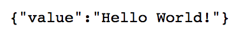

Lab 4.1 - Creating the HelloWorld iControl LX Extension¶
iControl LX extensions are distributed as RPMs (RedHat Package Management system) when you want to leverage something existing. However when you start from scratch, you’ll need to create your extension and then build a RPM that you can distribute accordingly.
Task 1 - Create our iControl LX Extension on BIG-IP¶
iControl LX extensions can be installed on either the BIG-IP or iWorkflow platform. For this lab, we will use BIG-IP.
Perform the following steps to complete this task:
Connect to your BIG-IP platform via ssh/Putty(
10.1.10.20)iControl LX extensions reside in
/var/config/rest/iapps/. This is where you need to create your iControl LX extension. Usually you will create:- A folder that is the name of your app:
HelloWorld
Note
This folder name is important since this is what will be used as the RPM name when we will create our package later.
- inside the app folder, another folder called
nodejsthat will contain your extension
- A folder that is the name of your app:
Let’s create our directory tree. On your BIG-IP platform, execute:
mkdir -p /var/config/rest/iapps/HelloWorld/nodejs/Now that we have our directory, we need to create our extension. Use your preferred editor and create a file named
hello_world.jsin/var/config/rest/iapps/HelloWorld/nodejs/:nano /var/config/rest/iapps/HelloWorld/nodejs/hello_world.jsNote
If you have not used nano before: After you paste in the contents below, you will type
CTRL-Xto exit the editor. You will then be prompted to save the file, typeYto confirm.Copy/Paste the following content into your file:
/** * A simple iControl LX extension that handles only HTTP GET */ function HelloWorld() {} HelloWorld.prototype.WORKER_URI_PATH = "ilxe_lab/hello_world"; HelloWorld.prototype.isPublic = true; /** * handle onGet HTTP request */ HelloWorld.prototype.onGet = function(restOperation) { restOperation.setBody(JSON.stringify( { value: "Hello World!" } )); this.completeRestOperation(restOperation); }; /** * handle /example HTTP request */ HelloWorld.prototype.getExampleState = function () { return { "value": "your_string" }; }; module.exports = HelloWorld;
Save the changes (
ESC ESC :wqif you use ``vi`)Once our extension is created, we need to load it into
restnoded. When an extension is loaded from a RPM, it is done automatically. However here, we will need to do it ourselvesUse the following command on BIG-IP to make
restnodedaware of our extension:restcurl shared/nodejs/loader-path-config -d '{"workerPath": "/var/config/rest/iapps/HelloWorld"}'Note
restcurlis a utility that allows you to communicate with iControl REST via the CLI.The output should look like this:
$ restcurl shared/nodejs/loader-path-config -d '{"workerPath": "/var/config/rest/iapps/HelloWorld"}' { "id": "ad130c79-59a0-49c7-a7e7-ff39efe956b5", "workerPath": "/var/config/rest/iapps/HelloWorld", "generation": 1, "lastUpdateMicros": 1508242306312732, "kind": "shared:nodejs:loader-path-config:loaderpathstate", "selfLink": "https://localhost/mgmt/shared/nodejs/loader-path-config/ad130c79-59a0-49c7-a7e7-ff39efe956b5" }The logfile
/var/log/restnoded/restnoded.0.logwill give you the ability to track whether your extension is loaded as expected. Run the following command to ensure everything went smoothly:grep HelloWorld /var/log/restnoded/restnoded.logThe output should look like this:
Tue, 17 Oct 2017 12:11:46 GMT - finest: [LoaderWorker] triggered at path: /var/config/rest/iapps/HelloWorld Tue, 17 Oct 2017 12:11:46 GMT - finest: [LoaderWorker] triggered at path: /var/config/rest/iapps/HelloWorld/nodejs Tue, 17 Oct 2017 12:11:46 GMT - finest: [LoaderWorker] triggered at path: /var/config/rest/iapps/HelloWorld/nodejs/hello_world.js Tue, 17 Oct 2017 12:11:46 GMT - config: [RestWorker] /ilxe_lab/hello_world has started. Name:HelloWorld
Task 2 - Check our iControl LX Extension is Working¶
Perform the following steps to complete this task:
In your web browser, navigate to
https://10.1.10.20/mgmt/ilxe_lab/hello_worldYou should see something like this:
You could also use
curlin CLI (from BIG-IP CLI for example):curl -k -u admin:admin https://10.1.10.20/mgmt/ilxe_lab/hello_worldOr a REST client like POSTMAN.
Another test is to connect to our
/exampleuri. Navigate with your browser tohttps://10.1.10.20/mgmt/ilxe_lab/hello_world/exampleYou should see something like this:

You can also use curl in CLI:
curl -k -u admin:admin https://10.1.10.20/mgmt/ilxe_lab/hello_world/example
{kind=link}
Note
You may NOT want to use admin priviledges to leverage an extension. In many situation the extension may be needed only by a specific user and then you should be able to enforce some RBAC policies here. BIG-IP 13.1 will provide this capability (BIG-IP RBAC API).